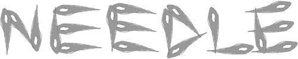

Needle
Needle is a ghost by myself and Galla! It's a needle. A disaster needle, if you will.
Needle was made as a part of Ghost Jam 2022, and took on the new assets only challenge. It was made in 72 hours, but does not qualify for that particular challenge because we made it later in the jam week.
If you're looking for a ghost experience like no other, give Needle a try! But do mind the content warnings. And the pointy tip.
Member of the Ukagaka/Ghost Development and Download webring
Previous Random Next